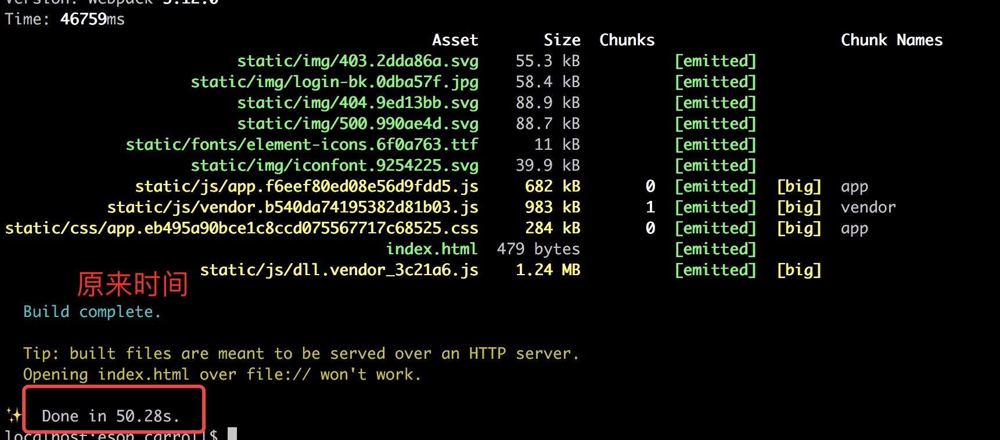
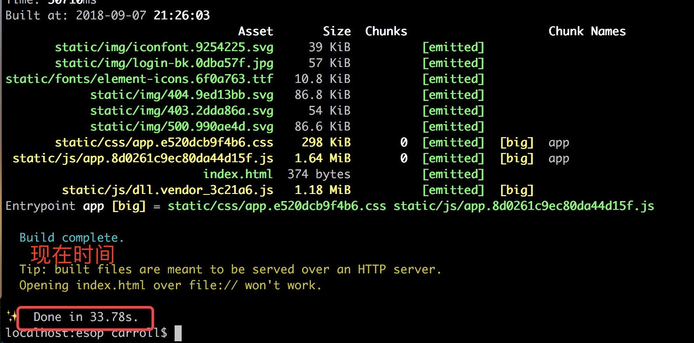
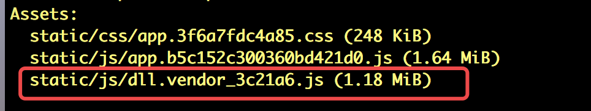
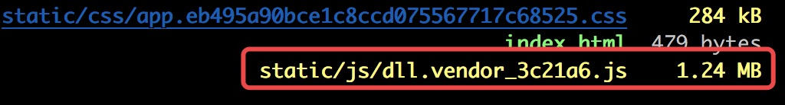

vue项目升级webpack4
2018-09-09
前言
因为现代脚手架越来越完善，打包工具就像一个黑盒子，我们越来越不用关心其内部实现，但是随着项目的增大，页面刷新速度越来越慢，打包体积越来越大，打包时间甚至超过了后端java的打包编译时间，这时候你还能忍受吗？
我们团队也有内部自定义脚手架，基于vue-cli，改造和新增了一些功能，webpack版本是3.12.0，刚开始打包速度接近2分钟，用webpack DllPlugin插件优化（DllPlugin优化可以参考这篇文章，webpack打包体积和速度优化）之后，也需要50秒，随着项目代码越来越多，代码热更新（HMR，webpack的HotModuleReplacementPlugin插件）时间也越来越长，eslint解析文件内错误语法的时间也变长了，所以趁着webpack4发布稳定版本，我做了一次更新。
webpack4做了哪些更新？
我介绍几个更新的核心的功能，其它请移至这篇文章，手摸手，带你用合理的姿势使用 webpack 4（上）。
optimization.splitChunks代替CommonsChunkPlugin
废除Uglifyjs插件，采用.minimize配置的方式
废除css插件extract-text-webpack-plugin，引入mini-css-extract-plugin
热更新加速，更好的利用缓存，加快本地刷新速度。
Last but not least，学习了rollup、parcel简易配置化的优势，减少了用户需要配置项。比如默认自带entry和output配置，无需配置。
从这些更新能看出，webpack4的版本迭代可算是诚意满满。
vue中，webpack3更新至webpack4
升级webpack和相关依赖
升级webpack和所有的依赖，但是这里面也有坑，比如我升级了babel（babel的配置，可参考这篇文章，Setting up a Vue.js Project with webpack 4 and Babel 7），却发现它的配置方式改变了，还有postcss配置。所以我建议先升级webpack相关所有的依赖，包括”webpack-dev-server“，“webpack-merge”，“html-webpack-plugin”等。新版本中将命令行单独拆分出去了，所以还需要安装“webpack-cli”。当然你的node版本不能过低，node8.x已经是稳定版本了，可以升级到8的版本，如果有老项目维护，可以通过nvm管理。
1 | # 哪些依赖可以升级 |
通过mode控制环境
webpack4不再通过NODE_ENV变量，或者webpack -p控制是开发还是生产等环境，而是通过mode的模式，在webpack.xxx.config.js添加相应的配置1
2
3
4
5
6
7
8// 开发环境
const webpackConfig = merge(baseWebpackConfig, {
mode: 'development'
}
// 生产环境
const webpackConfig = merge(baseWebpackConfig, {
mode: 'production'
}
或者通过package.json方式修改1
2
3
4"scripts": {
"dev": "webpack --mode development"
"build": "webpack --mode production"
}
UglifyJsPlugin和OptimizeCSSPlugin
在webpack.production.config.js中修改1
2
3
4
5
6
7
8
9
10
11
12
13
14
15
16
17
18
19
20
21
22
23
24
25
26
27
28
29
30
31
32
33
34
35
36
37
38
39
40
41
42
43
44
45
46
47
48const webpackConfig = merge(baseWebpackConfig, {
optimization: {
minimizer: [
new UglifyJsPlugin({
cache: true,
parallel: true,
sourceMap: config.build.productionSourceMap,
}),
new OptimizeCSSPlugin({
// 可自己配置，建议第一次升级先不配置
}),
],
splitChunks: {
// 可自己配置，建议第一次升级先不配置
}
},
plugins: [
// 注释plugins里UglifyJsPlugin，CommonsChunkPlugin，OptimizeCSSPlugin模块`
// new UglifyJsPlugin({
// uglifyOptions: {
// compress: {
// warnings: false
// }
// },
// sourceMap: config.build.productionSourceMap,
// parallel: true
// }),
// new webpack.optimize.CommonsChunkPlugin({
// name: 'vendor',
// minChunks(module) {
// // any required modules inside node_modules are extracted to vendor
// return (
// module.resource &&
// /\.js$/.test(module.resource) &&
// module.resource.indexOf(
// path.join(__dirname, '../node_modules')
// ) === 0
// );
// }
// }),
// new OptimizeCSSPlugin({
// cssProcessorOptions: config.build.productionSourceMap
// ? { safe: true, map: { inline: false } }
// : { safe: true }
// }),
]
}
vue-loader配置修改
在vue文件的解析引入专门的插件，vue-loader，不再通过rules里options配置项。在webpack.base.conf.js中1
2
3
4
5
6yarn add vue-loader --save
const VueLoaderPlugin = require('vue-loader/lib/plugin');
plugins: [
new VueLoaderPlugin(),
]
删除extract-text-webpack-plugin，引入mini-css-extract-plugin
1 | yarn add mini-css-extract-plugin --save |
utils修改为mini-css-extract-plugin插件打包
1 | const MiniCssExtractPlugin = require('mini-css-extract-plugin') |
可能遇到问题
244KB限制提醒，WARNING in asset size limit: The following asset(s) exceed the recommended size limit (244 KiB).webpack中添加performance配置项
1
2
3
4
5
6
export.modules = {
performance: {
hint: true
}
}babel升级之后报错，babel TypeError: this.setDynamic is not a function？参考Setting up a Vue.js Project with webpack 4 and Babel 7
还是babel升级之后的问题，Plugin/Preset files are not allowed to export objects, only functions.参考https://stackoverflow.com/questions/49073105/error-running-webpack-with-react-grid-layout-plugin-preset-files-are-not-allowe
eslint提示，object-curly-spacing相关错误，在.eslintrc.js中配置，rules配置内容需要用到双引号，因为eslint会把它当做JSON解析。
1 | rules: [ |
- postcss升级报错，UnhandledPromiseRejectionWarning: Error: Option safe was removed. Use parser: require(“postcss-safe-parser”)。在OptimizeCSSPlugin添加postcss-safe-parser插件。
1 | const safeParser = require('postcss-safe-parser'); |
- scss打包错误，this._identifier.split(‘!’).pop();Cannot read property ‘split’ of undefined。_identifier指向了一个undefined对象，把webpack.base.config.js中scss的配置项去掉。
1 | // { |
优化完之后对比
打包速度，提升了20秒左右


打包体积


热更新时间
没什么变化
总结
第一次升级完webpack4之后，除了打包时间，其他没有明显的提升，后面我还会细化webpack4配置。但是我觉得你并不能指望一个版本的迭代，项目所有基础设置都有质的提升。所以对于打包时间没有需求的项目，我不建议升级webpack4。即使webpack4即使简化了许多配置，上手难度还是高，坑也还是多。
参考文章
写作时间：
20180909